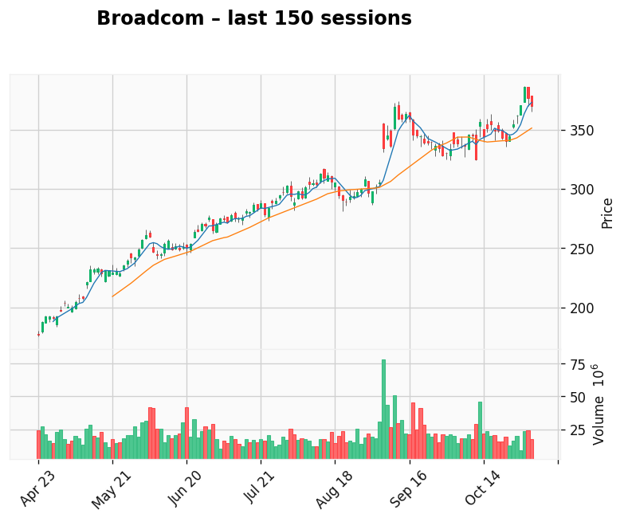

AI-generated analysis combining predictive modeling and recent market context.
Applied Materials
Gap: 42.27% Candle: 68.34% (black)
Applied Materials shows bearish sentiment (68.34%, gap 42.27%).Applied Materials is also starting to draw criticism for what some investors see as an overinvestment problem, with the company ramping up spending and capacity on the assumption that the current semiconductor upcycle and AI boom will continue almost unabated. After pouring billions into new fabs, equipment R&D, and long-term supply commitments, questions are emerging about whether demand will justify this scale of expansion once the cycle inevitably cools. The risk is that Applied Materials could find itself with excess capacity, elevated operating costs, and slower returns on capital just as customers begin to tighten their own investment plans. At the same time, regulatory and geopolitical uncertainties in key markets like China add another layer of risk to projects with long payback periods. As a result, sentiment around the stock has shifted from “can’t lose AI winner” to a more cautious view that the company may have pushed too hard, too fast. The next few quarters will need to prove that Applied’s aggressive capex and expansion strategy can translate into durable, profitable growth rather than becoming a textbook case of overinvestment at the top of the cycle.

Broadcom
Gap: 76.02% Candle: 66.79% (black)
Broadcom shows bearish sentiment (66.79%, gap 76.02%). Broadcom is facing a wave of negative sentiment lately, with analysts increasingly suggesting that the company may have entered an overinvestment phase. After years of rapid expansion fueled by large acquisitions — including VMware, Symantec’s enterprise division, and CA Technologies — concerns are growing that the scale and pace of spending may now outweigh measurable returns. While these deals strengthened Broadcom’s position across enterprise software and cloud infrastructure, the integration and monetization timeline appears slower than expected, especially in a market that’s becoming more cautious. Slowing demand in server markets, intensifying competition in AI infrastructure, and tighter IT budgets are adding pressure, triggering doubts about whether the company can efficiently capitalize on its sprawling portfolio. As a result, investor sentiment has shifted from optimistic to watchful, with the market waiting to see whether Broadcom’s bold expansion strategy will translate into sustainable growth or become an example of strategic overreach. The coming quarters will be a crucial stress test — not only for the company’s technology roadmap, but also for the logic behind its aggressive investment strategy.
